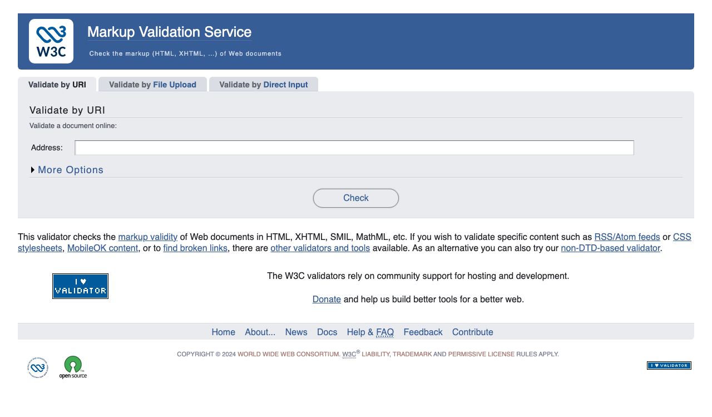
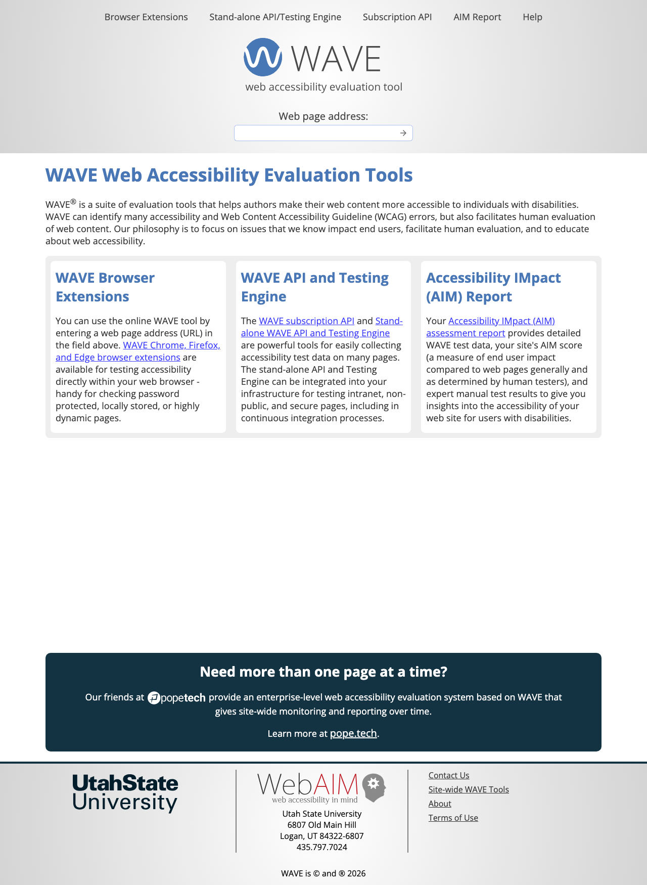

Validating and Debugging Your Code
Finding and Fixing Errors in HTML, CSS, and JavaScript
Use arrow keys, swipe, or click buttons to navigate
Finding and Fixing Errors in HTML, CSS, and JavaScript
Use arrow keys, swipe, or click buttons to navigate
Bugs happen to everyone. Don't worry about them—just learn to find and fix them!
Testing your pages with a special application that:

Tip: Fix errors in order—one fix often resolves multiple reported issues!
Code Editors
VS Code, Sublime Text have built-in validation as you type
Browser Extensions
HTML Validator, CSS Validator extensions for in-browser checking
Build Tools
HTMLHint, ESLint, Stylelint for automated validation
Modern editors catch many errors in real-time before you even save the file!
Beyond syntax—ensure your pages work for everyone:
axe DevTools
Browser extension with detailed accessibility reports
WAVE
wave.webaim.org - Visual accessibility feedback
Lighthouse
Built into Chrome DevTools - audits accessibility, SEO, performance

Right-click any element → "Inspect" or "Inspect Element"
Elements
Inspect and edit HTML and CSS in real-time
Console
View errors, warnings, and log messages
Sources
Debug JavaScript with breakpoints
Network
Monitor resource loading and API calls
Performance
Identify bottlenecks and optimize speed
Lighthouse
Audit accessibility, SEO, and performance
<i> without </i><ll> instead of <li><h1><i>Favorite<i> Movies</h1>
<ul>
<ll>Lord of the Rings</li>
<li>Harry Potter</li>
</ul>Problems: Missing / in closing </i> and typo <ll>
<h1><i>Favorite</i> Movies</h1>
<ul>
<li>Lord of the Rings</li>
<li>Harry Potter</li>
</ul>The inspector shows the DOM as the browser interprets it—differences reveal errors!
Changes in DevTools are temporary—copy working changes to your source file!
Try different console methods and open DevTools (F12) to see the output.
SyntaxError
Invalid syntax - missing brackets, typos
console.log("Hi"
// Missing )ReferenceError
Variable not defined
console.log(myVar);
// myVar is not definedTypeError
Wrong type or null value
null.toString();
// Cannot read propertyRemember: JavaScript is case-sensitive! countIt() ≠ countit()
function calculate() {
debugger; // Pauses here!
const result = a + b;
return result;
}The debugger keyword pauses execution when DevTools is open.
Remove debugger statements before deploying to production!
When paused at a breakpoint:
Add custom expressions to monitor:
count > 5Hover over any variable in the source code while paused to see its current value!
function incCount() {
var count = 0; // Problem!
count += 1;
return count;
}
// Always returns 1!Issue: count resets to 0 every time the function is called.
var count = 0; // Moved outside
function incCount() {
count += 1;
return count;
}
// Now increments properly!Fix: Declare count outside the function so it persists.
Production code is often:
This makes debugging nearly impossible!
Source maps provide a mapping between:
Desktop testing isn't enough—real devices reveal unique issues:
chrome://inspectImportant: Device mode is useful for quick testing, but always verify on real devices before launching!
The methods you learned will save countless hours of frustration. Bugs happen—now you know how to find and fix them!
<!doctype> tag?A: Yes! Without it, browsers guess which standard to follow, which can cause display issues.
debugger vs manual breakpoints?A: Manual breakpoints for quick sessions. Use debugger in code for complex paths or page load issues. Always remove before production.
A: Focus on errors (red) first. Warnings (yellow) should be addressed but may not break your page. Aim for a clean console in production.
A: Use remote debugging to connect your device to desktop DevTools via USB.